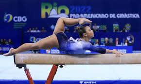
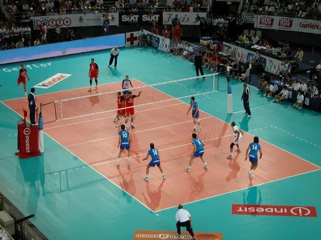
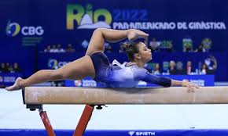
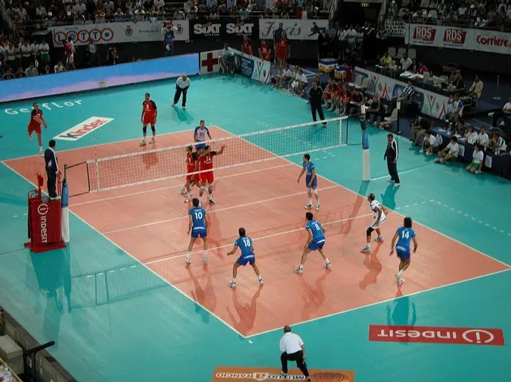

Gabriela Govaski e Natan: Atletas de atletismo. Gabriela é maratonista, já fez meia-maratona e a maratona inteira, além de correr em eventos de empresas como unimed e nas corridas do Athletico.
Natan é especialista em marcha atlética. Já ganhou na prova de 5km, em Curitiba.
Livia: Ginástica Artística. Começou em 2017, quando tinha apenas 8 anos. Com sua evolução, sua técnica Khiuani Dias (que era da seleção brasileira) convidou para competições. Já ganhou inúmeros campeonatos paranaenses, e no ano de 2025 irá participar do Torneio Nacional.
Pedro Henrique: Vôlei. Já participou de diversos campeonatos internos do CEP, além de participar em Ligas de Vôlei, jogando contra o Clube Duque de Caxias e Círculo Militar.
 


